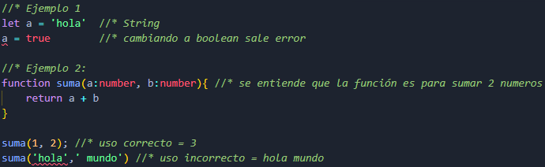

¿Qué es TypeScript?
TypeScript es JavaScript con una sintaxis para tipos estáticos.
TypeScript es un lenguaje que compila a Javascript. Este tipo de lenguaje aporta a Javascript diferentes herramientas y posibilidades, por lo que se conoce como "superset".
TypeScript amplía Javascript con una nueva sintaxis que añade, entre otras cosas, el tipado estático opcional, genéricos, decoradores y elementos de POO como interfaces o property accessors.
¿Por qué aprenderlo?
- Popularidad:
- A lo largo de los últimos años Javascript ha crecido mucho y se ha convertido en el camino a seguir para escribir aplicaciones multiplataforma. En los últimos años la popularidad de TypeScript se ha disparado y se perfila como uno de los lenguajes de programación con más futuro.
- Sencillo de aprender:
- TypeScript está basado en JavaScript, por lo que si se tienen las bases, aprenderlo será muy facil.
Ventajas:
- Para aplicaciones grandes JavaScript no era muy fiable, le faltaban cosas de sintaxis y sobretodo los tipos.
- Nos permite utilizar técnicas como el tipado estático opcional y/o la encapsulación para generar un código mucho más mantenible y escalable que con JavaScript tradicional, sin perder el carácter dinámico del mismo.
- TypeScript permite aplicar tipado a las variables, por lo que permite convertir al lenguaje Javascript en un lenguaje fuertemente tipado y estático.

Características:
- Superset de Javascript:
- TypeScript es un lenguaje creado encima de Javascript, por ello todo código Javascript es un código válido TypeScript. Además, cualquier código TypeScript se ejecutará de igual manera que lo haría ese código en Javascript, manteniendo las características propias del lenguaje Javascript sin alterar.
- Compila a Javascript:
- TypeScript no se ejecuta en dispositivos o navegadores. En cambio, TypeScript debe de ser compilado a Javascript antes de poder ejecutarse en cualquier plataforma.
- Lenguaje tipado:
- TypeScript aporta tipos de datos estáticos encima de Javascript. Los tipos de datos solamente sirven en tiempo de desarrollo, ayudando al programador a detectar de manera temprana posibles errores. Una vez compilado, cualquier tipo de datos es removido, ya que en Javascript, el lenguaje al que compila, no hay tipos de datos.
- Lenguaje moderno y en constante evolución:
- Dado que TypeScript no es un estándar dependiente de una organización de estandarización como Javascript, es capaz de evolucionar rápidamente, aportando constantes innovaciones o características de los lenguajes más modernos.